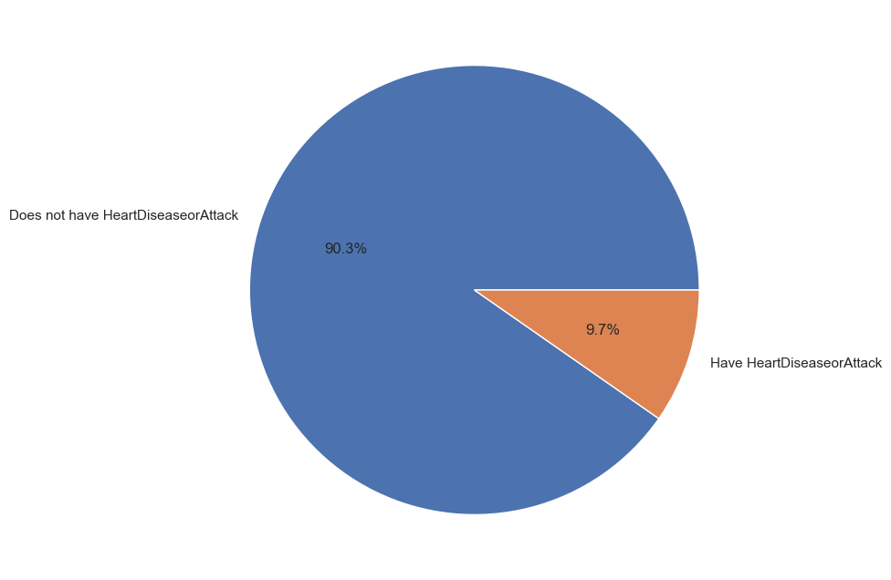
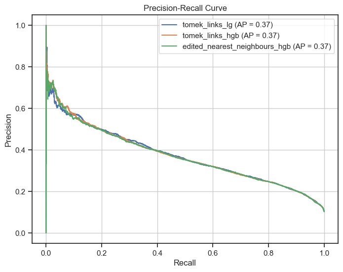
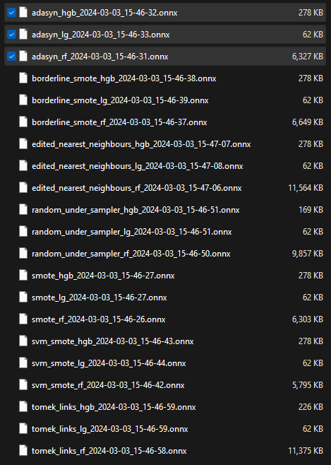
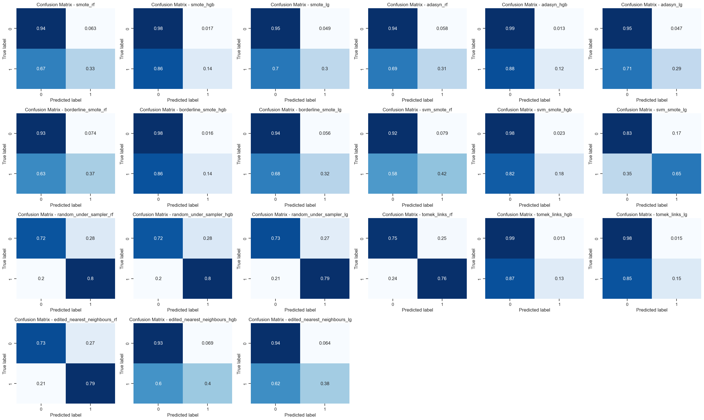
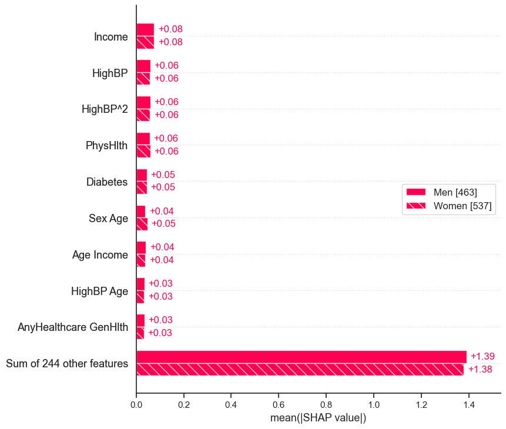
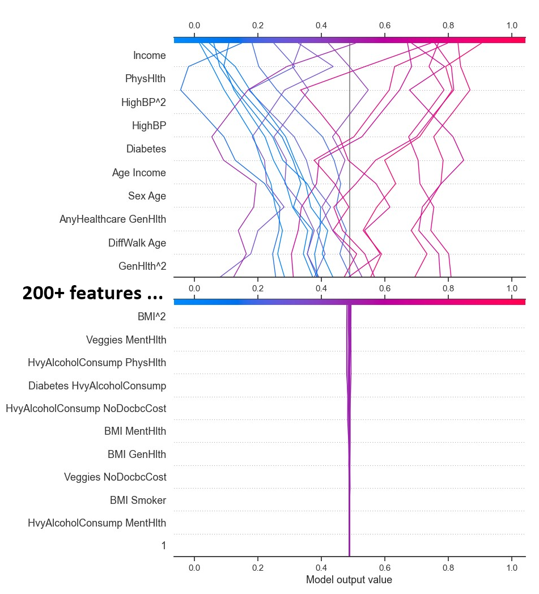

Our Journey:
Our team, a mix of curious minds from Vanier College, embarked on a remarkable adventure: using AI to fight against the ever-present threat of heart disease. While one teammate brought some experience with Python and a taste of the exciting world of AI, the rest of us - two science enthusiasts, one specializing in health sciences, and another diving into computer science and mathematics - were driven by a powerful combination of curiosity and the desire to learn and contribute through teamwork.
We were all eager to explore this uncharted territory, excited to understand how AI could be used for good, and passionate about leaving a positive impact on the world.
Step 1: Data Acquisition and Preparation
Our first mission on this AI adventure was to hunt down some data. We scoured the web, places like Kaggle, for publicly available datasets related to healthcare or finance. The goal? Find the building blocks for our machine learning model.
But, the data gods smiled upon us! As we were digging, we stumbled upon a goldmine: a dataset specifically focused on heart disease patients. Even better, this dataset was already prepped and polished - minimal cleaning needed! Unlike other datasets we'd seen, this one was free of missing pieces, inconsistencies, or formatting headaches. No wrestling with messy data for us! This lucky find meant we could skip the data cleaning grind and head straight into understanding the dataset and building our cool model.
Step 2: Understanding the Problem and Tools
Heart Disease: A Global Foe
Our journey began by taking a deep dive into the heartbreaking impact of heart disease worldwide. We learned about its alarmingly high prevalence, the risk factors that contribute to it, and the immense burden it places on individuals, families, and healthcare systems. This understanding fueled our passion to explore the potential of Artificial Intelligence (AI) and Machine Learning (ML) in tackling this critical issue.
Leveling Up Our Skills
Our team was a diverse mix of individuals with varying levels of experience in AI and programming. Recognizing this, I, with my prior knowledge, took on the role of a supportive guide to facilitate the learning process for everyone. I directed the team towards a series of engaging video tutorials covering the essentials: Python programming, scikit-learn, and Git & GitHub Desktop. These resources served a dual purpose: providing a solid foundation in these crucial topics and equipping us with the necessary tools for seamless collaboration and efficient version control.
Delving Deep into the Data
To further unravel the mysteries within the dataset, we actively participated in our AI cohort workshop sessions. Through interactive exercises and thought-provoking discussions, we gained valuable insights into data visualization techniques, descriptive statistics, and pattern identification. These exploratory endeavors allowed us to peel back the layers of the dataset, laying a strong foundation for the analysis and model development stages that lay ahead.
Unveiling a Bias
However, during our data exploration, we stumbled upon a critical challenge: the dataset exhibited class imbalance. This means that for our binary classification problem (predicting the presence or absence of heart disease), a whopping 90% of the data belonged to the "no heart disease" class (target value of 0.0), while only 10% belonged to the "heart disease" class (target value of 1.0). This uneven distribution presented a potential roadblock, as our model might perform less effectively in identifying positive cases (heart disease) due to its overexposure to negative examples. Recognizing this bias early on allowed us to strategize mitigation techniques and ensure a more robust and reliable model.
Distribution of rows with and without heart disease Step 3: Building and Training our Model
In our pursuit of developing an effective model for predicting heart disease, we embarked on an exciting journey through the realm of machine learning algorithms and techniques. Here's a detailed account of our approach:
Exploring Machine Learning Algorithms
We delved into a diverse array of machine learning algorithms, each offering unique strengths and capabilities. Two algorithms emerged as our top contenders: Logistic Regression and Random Forest. Logistic Regression, a classical and interpretable algorithm, provided a solid baseline, while Random Forest, an ensemble method, promised enhanced predictive power and robustness.
Model Training
With our chosen algorithms in hand, we proceeded to train them on our carefully prepared dataset. This crucial step involved feeding the data into the models, enabling them to discern and learn the intricate relationships between various features and the presence of heart disease. We employed techniques like cross-validation and grid search to optimize hyperparameters, ensuring our models were well-tuned for the task at hand.
Iterative Experimentation
Our approach wasn't static; instead, it was an iterative dance of exploration and refinement. We experimented with different techniques, such as feature engineering, polynomial features, and resampling methods like SMOTE and ADASYN, to address the class imbalance present in our dataset. This iterative process allowed us to assess the impact of each technique on model efficacy and make informed decisions about which approaches to pursue further.
Evaluation Metrics
As responsible data scientists, we understood the importance of robust evaluation metrics. Beyond traditional accuracy measures, we delved into metrics like precision, recall, and balanced accuracy to gain deeper insights into our models' performance. The Precision-Recall (PR) curve and the area under the PR curve (PR AUC) emerged as particularly valuable tools for assessing model performance in our imbalanced dataset scenario.
Precision-Recall curve of top models Visualization and Interpretation
Visualizing and interpreting our models' predictions played a pivotal role in our process. We constructed Precision-Recall curves to evaluate the trade-off between precision and recall across different thresholds, gaining valuable insights into model behavior. Additionally, we employed techniques like SHAP (SHapley Additive exPlanations) to understand the relative importance of different features in our models' predictions, fostering interpretability and transparency.
Model Selection
After a thorough evaluation and comparison, we identified the most promising models for further analysis. Our selection criteria were based on a holistic assessment, considering not only accuracy but also recall, precision, and the area under the Precision-Recall curve (PR AUC). This comprehensive approach ensured that we selected models that strike a balance between effectively detecting positive cases (high recall) and providing reliable positive predictions (high precision).
Saving the Models
Recognizing the importance of reproducibility and scalability, we saved our trained models in the ONNX format. This format ensures compatibility across different platforms and environments, facilitating seamless integration into real-world applications and enabling efficient deployment and inference.
All ONNX model files with their sizes Through this rigorous process of exploration, experimentation, and evaluation, we gained invaluable insights into the strengths and limitations of various machine learning algorithms and techniques within the context of our heart disease prediction challenge.
Step 4: Evaluation and Refinement
Evaluating and refining machine learning models is a crucial step in ensuring their effectiveness and reliability. In this project, we employed various evaluation metrics and techniques to assess and improve our models' performance.
Evaluation Metrics
We utilized a diverse set of evaluation metrics to gain a comprehensive understanding of our models' performance:
- Accuracy: Accuracy measures the overall proportion of correctly classified instances, providing a general overview of model performance.
- Precision: Precision quantifies the proportion of true positive instances among all instances predicted as positive. In our context, it measures the reliability of positive predictions (presence of heart disease).
- Recall: Recall, also known as sensitivity, measures the proportion of actual positive instances that were correctly identified by the model. It indicates the model's ability to detect all positive cases, a crucial aspect in healthcare applications.
- Precision-Recall Curve and Average Precision Score (PR AUC): The precision-recall curve provides a comprehensive view of the trade-off between precision and recall at various threshold settings. The area under this curve (PR AUC) is a valuable metric for evaluating models, especially in imbalanced datasets like ours, as it considers both precision and recall.
- Balanced Accuracy Score: This metric adjusts for class imbalance by calculating the average of recall scores for each class. It provides a more reliable performance measure when dealing with skewed class distributions, ensuring that the model's performance is not skewed towards the majority class.
By considering these diverse metrics, we gained a holistic understanding of our models' performance, enabling us to make informed decisions during the refinement process.
Model Refinement Techniques
To improve our models' performance, we employed several refinement techniques:
- Feature Engineering: We explored various feature engineering approaches, including polynomial features, to capture non-linear relationships and enhance the predictive power of our models.
- Hyperparameter Tuning: We utilized techniques like grid search and cross-validation to systematically tune the hyperparameters of our models, such as regularization parameters for logistic regression and tree-based hyperparameters for random forests.
- Ensemble Methods: For the random forest models, we experimented with ensemble techniques that combine multiple weak learners to create a stronger and more robust model.
- Class Imbalance Mitigation: To address the class imbalance in our dataset, we employed techniques like oversampling (SMOTE, ADASYN) and undersampling (Random Undersampler, TomekLinks, Edited Nearest Neighbours). These methods helped balance the class distributions and improve model performance on the minority class (presence of heart disease).
The model refinement process was iterative, involving multiple cycles of evaluation, parameter adjustments, and technique exploration. We continuously monitored the evaluation metrics and used them as guidance to refine our models further.
Visualizations and Interpretability
In addition to the evaluation metrics, we relied on various visualizations to gain insights into our models' performance and behavior:
- Precision-Recall Curves: We plotted precision-recall curves for our top-performing models, allowing us to visually assess the trade-off between precision and recall at different thresholds.
- Confusion Matrices: Confusion matrices provided a clear representation of the models' predictions, highlighting the distribution of true positives, true negatives, false positives, and false negatives. Confusion matrices of all models with sampling techniques 
- Feature Importance Plots: To understand the relative importance of different features in our models' predictions, we utilized techniques like SHAP (SHapley Additive exPlanations) and feature importance plots for tree-based models.
These visualizations not only aided in model evaluation and selection but also facilitated interpretability, a crucial aspect in sensitive domains like healthcare.
SHAP bar plot showing feature importance difference between genders  SHAP decision plot for 20 rows with the 10 most and least important features Best Model Selection
After thorough evaluation and refinement, we selected the best-performing model(s) based on a comprehensive analysis of the evaluation metrics. While PR AUC served as a guiding metric, we also considered balanced accuracy, recall, and precision to ensure a well-rounded assessment.
The final model selection involved careful consideration of the trade-offs between different metrics and the specific requirements of our problem domain. Ultimately, we aimed to strike a balance between effective detection of positive cases (high recall) and reliable positive predictions (high precision), while maintaining overall robustness and generalization capabilities.
Throughout the evaluation and refinement process, we encountered several challenges and limitations. Computational resource constraints and inherent limitations of certain algorithms required us to make strategic decisions and trade-offs. Additionally, we recognized the potential for biases in the dataset and the importance of continuous monitoring and responsible deployment of our models.
By iteratively evaluating, refining, and interpreting our models, we not only improved their performance but also gained a deeper understanding of the underlying patterns and relationships within the data. This knowledge will be invaluable as we continue to explore and develop AI solutions for addressing critical healthcare challenges.
Step 5: Ethical Considerations
Ethical considerations play a crucial role in the development and deployment of machine learning models, especially in sensitive domains like healthcare. In the context of our heart disease prediction model, we must carefully navigate potential ethical risks and implement appropriate mitigation strategies to ensure responsible and trustworthy AI.
One aspect of our project that may pose ethical risks is the potential for biased or discriminatory predictions. Given the complexity and multifaceted nature of heart disease, our model's predictions could be influenced by factors beyond the health indicators included in our dataset. For instance, socioeconomic status, access to healthcare, and environmental factors may indirectly contribute to an individual's risk of heart disease, but these factors may not be adequately captured or represented in our dataset.
To mitigate this risk, we would implement the following strategies:- Data Collection and Representation: We would strive to obtain a diverse and representative dataset that captures a wide range of demographics, socioeconomic backgrounds, and environmental factors. This would involve collaborating with healthcare providers, community organizations, and experts to ensure that our data collection process is inclusive and minimizes potential biases.
- Algorithmic Fairness: We would incorporate algorithmic fairness techniques into our model development process. This may involve techniques such as adversarial debiasing, which aims to remove sensitive attributes (e.g., race, gender, socioeconomic status) from the model's decision-making process, or constrained optimization approaches that explicitly incorporate fairness constraints during training.
- Interpretability and Explainability: We would prioritize the development of interpretable and explainable models, which can provide insights into the reasoning behind the model's predictions. Techniques like SHAP (SHapley Additive exPlanations) and feature importance analysis would enable us to identify and scrutinize any potential biases or unfair patterns in the model's decision-making process.
- Human Oversight and Accountability: While our model can assist in risk assessment and decision support, we would emphasize that it should not be treated as a standalone diagnostic tool. Human oversight and expert interpretation would be essential, particularly in high-stakes scenarios. We would establish clear guidelines and protocols for model usage, ensuring that healthcare professionals maintain ultimate responsibility for patient care decisions.
- Continuous Monitoring and Feedback: We would implement a continuous monitoring and feedback system to track the model's performance and potential biases in real-world deployments. This would involve collecting feedback from healthcare professionals, patients, and other stakeholders, and using this information to refine and update the model iteratively.
- Ethical Guidelines and Governance: We would establish a set of ethical guidelines and a governance framework to guide the responsible development and deployment of our model. This would involve collaborating with experts in bioethics, healthcare, and AI ethics to ensure that our practices align with established principles and best practices.
By proactively addressing ethical risks and implementing these mitigation strategies, we can strive to develop a heart disease prediction model that is not only accurate and effective but also fair, transparent, and aligned with ethical principles. Ultimately, our goal is to leverage the power of AI in a responsible and trustworthy manner, contributing to improved healthcare outcomes while upholding the highest standards of ethical conduct.
Step 6: Conclusion and Future Steps
Our journey in developing a machine learning model for predicting heart disease has been a profound and enriching experience. Through this project, we have gained invaluable knowledge and skills in areas such as data analysis, model development, and ethical AI practices.
Throughout the process, we encountered various challenges, including data quality issues, class imbalance, and the potential for biased predictions. However, by employing techniques like data preprocessing, resampling, and algorithmic fairness approaches, we were able to mitigate these challenges and develop a robust and reliable model.
One of the key lessons we learned is the importance of considering ethical implications at every stage of the model development cycle. By proactively addressing ethical risks and implementing strategies such as data representation, algorithmic fairness, interpretability, human oversight, and continuous monitoring, we aim to develop a model that not only accurately predicts heart disease but also upholds ethical principles and promotes trustworthiness.
Moving forward, we envision several exciting avenues for further exploration and advancement:- Expansion to Global Datasets: While our current model is trained on data from a specific geographic region, we plan to expand our data collection efforts to include diverse and representative datasets from different countries and cultures. This will enhance the model's generalizability and ensure that it can effectively serve diverse populations worldwide.
- Integration of Additional Data Sources: As healthcare technology continues to evolve, we anticipate the availability of new and rich data sources, such as wearable devices, electronic health records, and genomic data. By integrating these additional data sources into our model, we can potentially improve its predictive power and capture a more comprehensive picture of an individual's health status.
- Collaboration with Domain Experts: We recognize the importance of interdisciplinary collaboration in tackling complex healthcare challenges. By partnering with medical professionals, healthcare providers, and experts in fields like epidemiology and public health, we can gain deeper insights into the nuances of heart disease and ensure that our model aligns with clinical best practices.
- Continuous Refinement and Adaptation: As new scientific discoveries and medical advancements emerge, we must remain vigilant in refining and adapting our model to incorporate the latest knowledge and techniques. This iterative process will ensure that our model remains relevant, accurate, and aligned with the cutting edge of heart disease research and prevention strategies.
- Advocacy for Ethical AI in Healthcare: Beyond the technical aspects of our project, we aim to contribute to the broader discourse on ethical AI practices in healthcare. By sharing our experiences, insights, and best practices, we hope to raise awareness and promote the responsible development and deployment of AI technologies in this critical domain.
Our journey has been a testament to the transformative potential of AI in healthcare, as well as the importance of addressing ethical considerations from the outset. As we move forward, we remain committed to leveraging the power of machine learning to save lives, improve healthcare outcomes, and contribute to a more equitable and sustainable future for all.